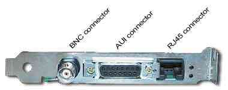

network
What you need to connect yourself to our mighty party network is quite simple. A 10/100Mbps network card with a RJ45 connector is all you'll need.

We kinda 'took' this image from the assembly page so I really hope they don't mind but this explains a lot. Some old cards have a BNC and RJ45 connectors. This is ok. Our network only needs that you have an RJ45 connector on the card since the other ones are old stuff no longer used... not by us at least :)
As for drivers we hope you have everything figured out by yourslef before comming to the party! With recent cards the routine is quite simple. Turn off the computer, open it, plug in the network card in a free slot, close the computer, turn it back on, and if you're running on a windows system it should automatically detect your new hardware and ask for drivers to use it. If you have a disk or cd that should have come with the card insert it and follow instructions, otherwise just tell windows to use whatever driver he sees fit. We do NOT take responsibilty if you do this on your own and it doesn't work in the end! It work for us wo that's why we're giving you all this info ;)
Anyway, you can bring your 10Mbps card, a 10/100Mbps (most common) or even a 100Mbps card (if it exists!). They all should work fine in our network. Local configuration settings are simple, just set everything to 'auto-detect' and other eventual automatic settings.